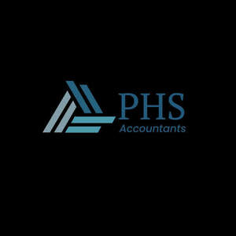
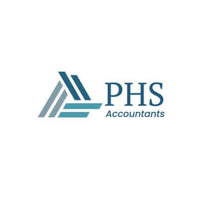

Trade Mark Journal No.2025/019 9 May 2025
UK00004190053 16 April 2025 (35)
Mark 1

Mark 2

- Class 35
- Accounting; Book-keeping and accounting; Book-keeping and accounting services; Management accounting; Cost management accounting; Computerised accounting; Accounting services; Payroll preparation; Cost accounting; Computerized accounting services; Consultancy relating to tax accounting; Computerised payroll preparation; Computerised tax assessments (preparation of -) [accounting]; Computerised accounting (Maintenance of -); Bookkeeping; Computerised accounting (Preparation of -); Payroll assistance; Accounting, in particular book-keeping; Wage payroll preparation; Accounting services relating to tax planning; Accounting consultancy relating to taxation; Payroll advisory services; Administration of business payroll for others; Business accounting advisory services; Data processing services in the field of payroll; Financial auditing; Auditing of accounts; Tax planning [accountancy]; Business accounts management; Balance sheet accounting; Tax consultancy [accountancy]; Accountancy services relating to accounts receivable; Business auditing; Accounting services for mergers and acquisitions; Payroll processing services [for others]; Tax assessment [accounts] preparation; Financial records management; Business advice relating to accounting; Account auditing; Consulting and information concerning accounting; Sales account management; Accountancy, book keeping and auditing; Taxation [accountancy] consultancy; Tax return advisory [accountancy] services; Business records management; Business invoicing services; Tax preparation and consulting services; Tax filing services; Tax consultations [accountancy]; Business organization and management consultancy including personnel management; Outsourced administrative management for companies; Business administration and management; Tax advice [accountancy]; Business file management; Outsourcing services in the field of business operations; Invoicing services; Accountancy services; Accounting for third parties; Consulting services in business organization and management; Inventory management services.
PHS ASSOCIATES ACC & CO LTD
Representative: Nihal Cuppoor